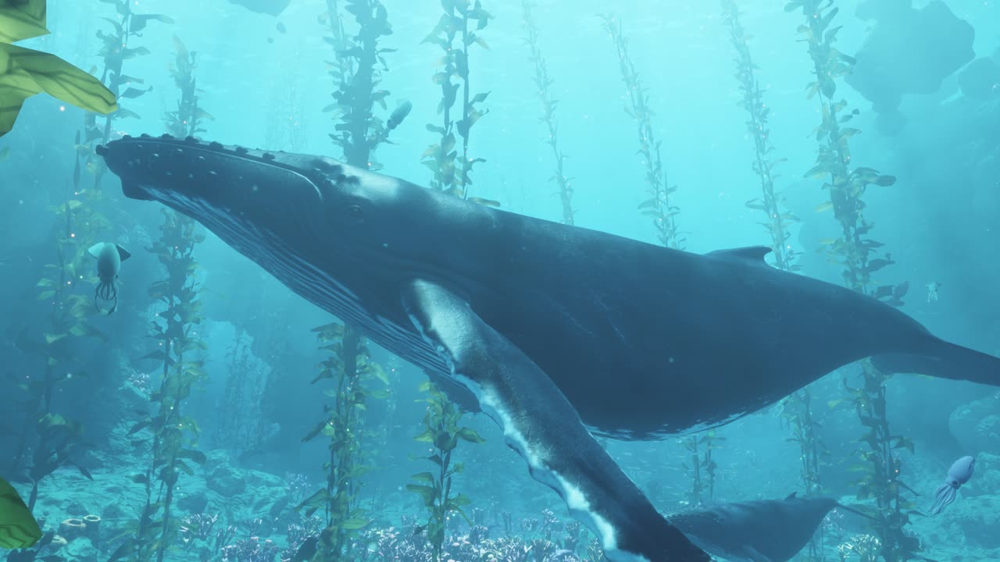
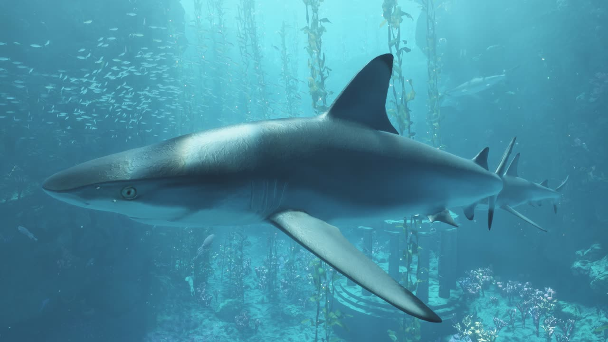
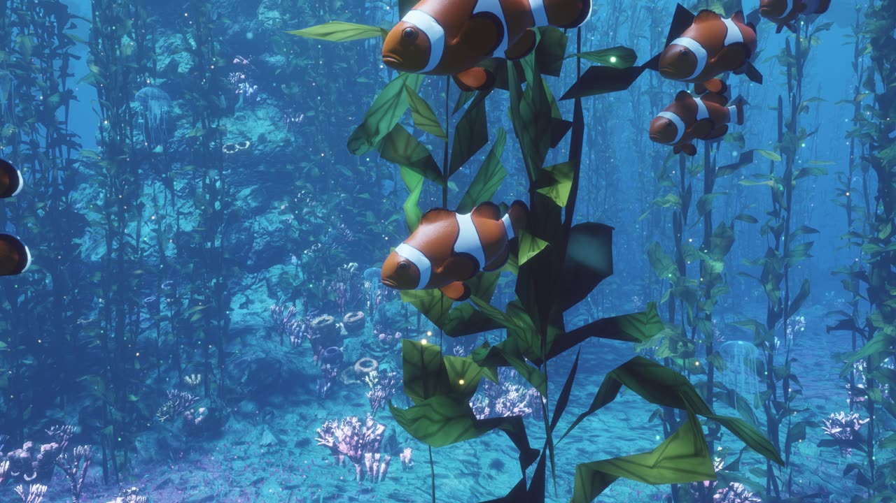
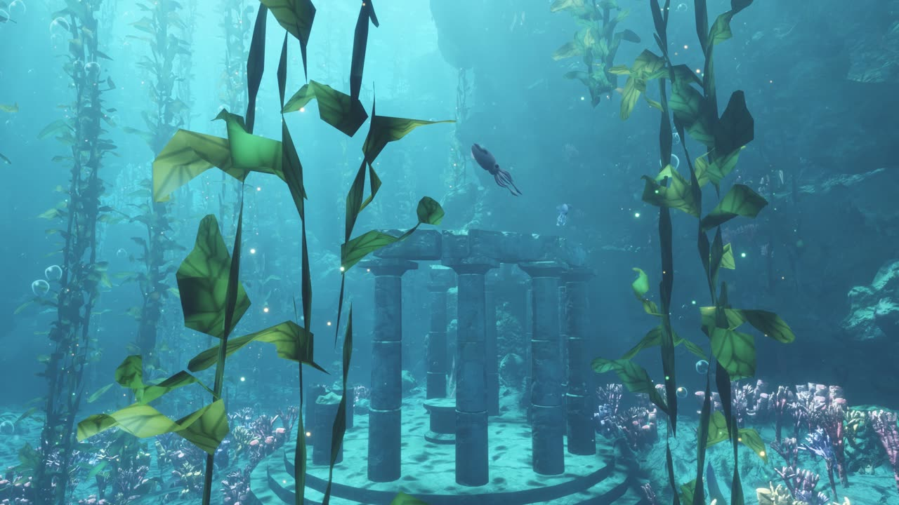
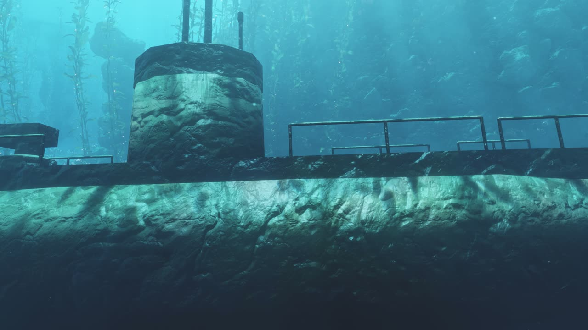
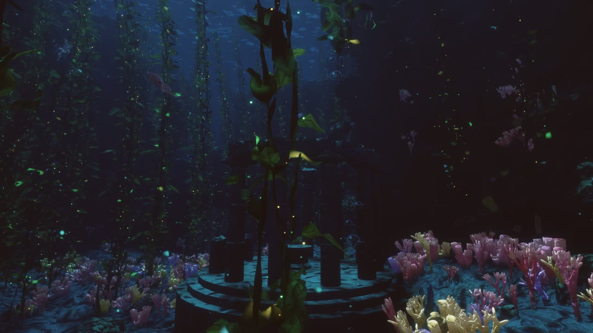

Slip under the surface and swim. Kelp forests, coral, sunken ruins and the animals that live among them, with nothing to win and nowhere you have to be. You steer by looking where you want to go.
Watch the film on YouTube (4K, 85 seconds)

Humpback and calf
Shark
Reef fish
Sunken ruins
The submarine
Night dive
What it is
Every dive is a world grown from a seed: its own seabed, rock, gardens and landmark, by day, at dusk or at night. Sharks, turtles, mantas, reef fish and a humpback with her calf swim their own rounds in it.
It runs natively on the headset, with no computer attached. All pictures on this page are rendered by the app itself.
Status
In development. There is no download yet; progress is written up in the log.